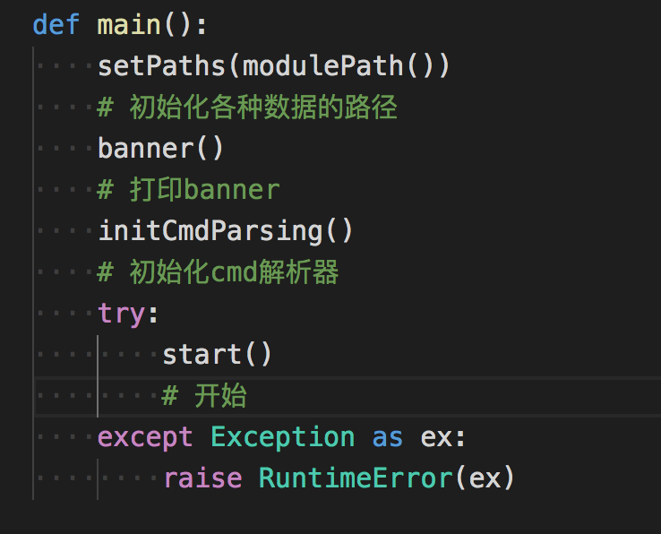
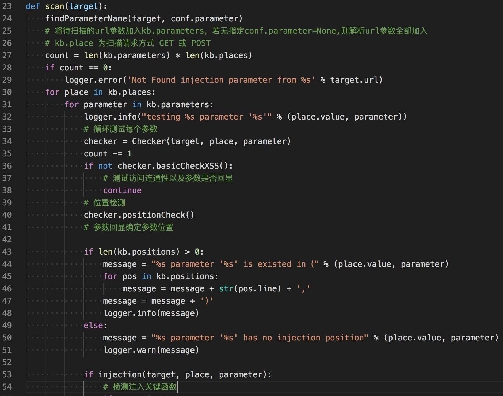
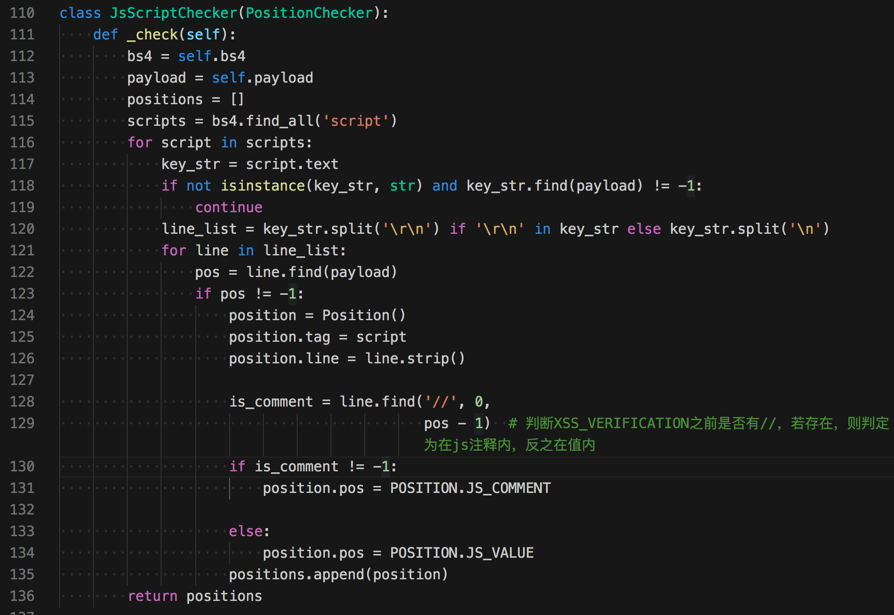
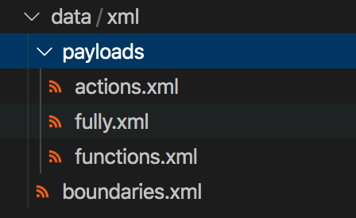
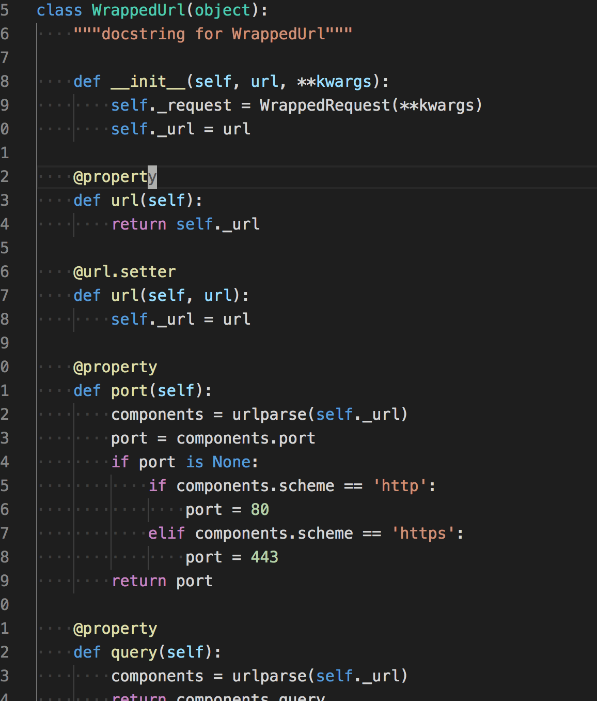

无意中在github上看到的xss扫描器项目
xssing是一个根据参数存在位置构造payload，并结合chromium保证xss的正确率。
Github:https://github.com/ziizhuwy/xssing
看了代码后觉得代码的结构和检测方式很适合学习，以后部分代码可能会用到，所以写个简单的源码阅读笔记。
结合chromium检测xss
这是一个python程序，在需要的支持库requirement.txt看到了pyppeteer，这个库提供了对chromium headless的支持。
使用它即可以用python代码来操纵浏览器，作者的想法是利用chromium来保证xss的正确率，它是如何保证的？
在文件lib/request/xssdrive.py有相关代码，精简一下流程如下
self.browser = await launch(headless=True, ignoreHTTPSErrors=True, autoClose=True,args=['--disable-xss-auditor', '--no-sandbox'])
# 启动浏览器
page = await self.browser.newPage()
# 创建一个页面
await before_request(page)
# 请求之前执行函数
page.on('dialog', lambda dialog: dialog.dismiss())
# 禁止弹窗
response = await page.goto(url)
# 请求一个url
await after_request(page)
# 请求之后执行函数
这是调用pyppeteer简单操作chromium访问url的流程。
在请求url之前执行的brfore_request函数，会注入页面一个全局js函数。
def _xss_auditor(self, message):
message = str(message)
if message in [str(XSS_MESSAGE), '[\'' + str(XSS_MESSAGE) + '\']']:
self.found_xss = True
async def before_request(self, page):
if self.func:
await page.exposeFunction(
self.func, lambda message: self._xss_auditor(message)
)
page.exposeFunction这个 API 用来在页面注册全局函数。
所以可以推测xssing检测xss的大体思路：
- 在浏览器访问前注册一个随机全局函数
- 随机全局函数被调用，且参数与内置参数相同，即可判定存在xss
这些只是针对自动触发的xss，对于需要点击才能触发的xss，在访问url完毕后，会通过寻找这个需要点击元素的位置来模拟点击,见after_request的定义
async def after_request(self, page):
if self.trigger is not None:
element = await page.querySelector(self.trigger)
if element is not None:
await element.click()
await page.waitForSelector(self.trigger)
。
代码结构与扫描流程
整份代码看得出来比较精简的模仿了sqlmap的结构，如果还不了解sqlmap的代码，看完这份代码也能比较清晰了解sqlmap代码的结构。
主函数

跟进start()
def start():
if not kb.targets:
raise SystemExit('No Found target')
for target in kb.targets:
# 循环每个目标
assert isinstance(target, WrappedUrl)
scan(target)
跟进scan函数

scan()函数中检测分为三步
- 测试访问连通性以及确定参数是否回显
- 检测出回显参数的位置
- 检测注入
回显位置检测
跟进checker.positionCheck()函数
kb.positions += JsScriptChecker(page, payload).check() # 在js脚本中探测
kb.positions += BlockChecker(page, payload).check() # 在html代码块中探测
kb.positions += AttributeChecker(page, payload).check() # 在html标签属性中探测
在js位置探测

在js代码中探测，这部分还是比较粗糙，从script标签中取出数据，并获得回显的那行代码，在多判断一步是否是注释。
在html代码块中探测
html代码块回显位置主要处理三种情况，1是在注释中，2是在标签中内，3是在标签中的文本中。主要使用BeautifulSoup模块中的搜索功能。
class BlockChecker(PositionChecker):
def _check(self):
bs4 = self.bs4
payload = self.payload
positions = []
comments = bs4.find_all(string=lambda text: isinstance(text, Comment))
# 搜索html注释类型
for comment in comments:
if payload in str(comment):
position = Position()
position.pos = POSITION.COMMENT
position.line = '<!--... %s ...-->' % str(comment)
position.tag = comment # TODO test
positions.append(position)
return positions
inBody = bs4.find(text=payload)
# 纯文本搜索payload
bs4.find()
if inBody is None: # 检测是否在body标签内
body = bs4.body
if body is not None:
text = body.text
line = '<body>...[PARAMETER]...</body>'
if text.find(payload) != -1:
position = Position()
position.pos = POSITION.LABEL_INSIDE
position.line = line
position.tag = body
positions.append(position)
return positions
contents = body.contents
for content in contents: # first method
if isinstance(content, NavigableString) and content.find(payload) != -1:
position = Position()
position.pos = POSITION.LABEL_INSIDE
position.line = line
position.tag = body
positions.append(position)
return positions
elif isinstance(inBody, NavigableString):
# NavigableString 表达字符串类，及回显内容在标签中的字符串中
# https://www.crummy.com/software/BeautifulSoup/bs3/documentation.zh.html
parent_tag = inBody.parent
if isinstance(parent_tag, Tag): # TODO test
position = Position()
position.line = str(parent_tag)
position.tag = parent_tag
position.pos = POSITION.LABEL_INSIDE
positions.append(position)
return positions
在html属性中回显
SPECIAL_ATTR = {
'href',
'action',
'formaction'
}
# 特殊属性
NON_EVENT_ATTRIBUTE = (
'accesskey',
'class',
'children',
'contenteditable',
'dir',
'draggable',
'dropzone',
'hidden',
'id',
'value',
'lang',
'spellcheck',
'style',
'tabindex',
'title',
'src',
'translate')
# 无法使用事件的属性
EVENT_ATTRIBUTE = (
'onload',
'onunload',
'onblur',
'onchange',
'oncontextmenu',
'onfocus',
'onforminput',
'oninput',
'oninvalid',
'onreset',
'onselect',
'onsubmit',
'onkeydown',
'onkeypress',
'onkeyup',
'onclick',
'ondblclick',
'ondrag',
'onmousedown',
'onmousemove',
'onmouseout',
'onmouseover',
'onmouseup',
'onmousewheel',
'onscroll',
'onerror',
'oncanplay',
'oncanplaythrough',
'ondurationchangeNew',
'onemptiedNew',
'onendedNew',
'onplayNew',
'onseeked',
'onseeking'
)
# 能够利用事件的属性
class AttributeChecker(PositionChecker):
def _check(self):
bs4 = self.bs4
payload = self.payload
positions = []
# 判断非事件属性
for non_eve_attr in NON_EVENT_ATTRIBUTE:
tag = bs4.find(attrs={non_eve_attr: payload})
if isinstance(tag, Tag):
position = Position()
position.line = str(tag)
position.tag = tag
position.pos = POSITION.NON_EVE_ATTR_INSIDE
positions.append(position)
# 判断事件型属性
for eve_attr in EVENT_ATTRIBUTE:
tag = bs4.find(attrs={eve_attr: payload})
if isinstance(tag, Tag):
position = Position()
position.line = str(tag)
position.tag = tag
position.pos = POSITION.EVE_ATTR_INSIDE
positions.append(position)
# 判断特殊属性
for eve_attr in SPECIAL_ATTR:
tag = bs4.find(attrs={eve_attr: payload})
if isinstance(tag, Tag):
position = Position()
position.line = str(tag)
position.tag = tag
position.pos = POSITION.SPECIAL_ATTR
position.attr = eve_attr
positions.append(position)
return positions
回显位置结构
class Position(object):
def __init__(self):
self._pos = None
self._token = None
self._line = None
self._tag = None
self._attr = None
@property
def pos(self):
return self._pos
@pos.setter
def pos(self, pos):
self._pos = pos
@property
def token(self):
return self._token
@token.setter
def token(self, token):
self._token = token
@property
def line(self):
return self._line
@line.setter
def line(self, line):
self._line = line
@property
def tag(self):
return self._tag
@tag.setter
def tag(self, tag):
self._tag = tag
@property
def attr(self):
return self._attr
@attr.setter
def attr(self, attr):
self._attr = attr
position = Position()
position.line = str(tag) # 当前payload的回显内容
position.tag = tag # 回显的标签
position.pos = POSITION.SPECIAL_ATTR # 位置类型
position.attr = eve_attr # html属性类型
通过查看枚举类型，position.pos 位置类型主要定义如下
class POSITION(Enum):
LABEL_INSIDE = 'lable' # 在label中
NON_EVE_ATTR_INSIDE = 'non-event attributes' # 无法执行的属性
EVE_ATTR_INSIDE = 'event attributes'# 可执行的属性
COMMENT = 'comment' # 注释
JS_COMMENT = 'javascript comment' # js注释
JS_VALUE = 'javascript variable' # js value
SPECIAL_ATTR = 'special attribute' # html特殊属性
检测注入
检测注入的方法在lib/core/controler.py injection函数，
def injection(target, place, parameter):
testXss = False
payloads_dict = dict()
loop = asyncio.get_event_loop()
browser = loop.run_until_complete(run_browser())
# 初始化一个chromuim浏览器
xss_drive = XSSCheckRequest(browser)
# 初始化xss drive类，这个类可以使用chromuim检测xss
def request(target):
# 访问一个目标
loop.run_until_complete(xss_drive.request(target))
for position in kb.positions:
info = 'heuristic (basic) test shows that %s parameter \'%s\' position(%s)' % (
place.value, parameter, position.line)
if not heuristicCheckXss(target, place, parameter, position):
# 主要检测注入点的边界
info += 'might not be injectable'
logger.warn(info)
continue
info += 'might be injectable'
logger.info(info)
payloads = getPayload(position)
# 生成 payload
if payloads is None or len(payloads) == 0:
msg = 'position(%s) no payload generated' % position.line
logger.warn(msg)
else:
payloads_dict[position] = payloads
if len(payloads_dict) == 0:
return False
payloads_sorted = sorted(payloads_dict.items(), key=lambda item: len(item[1]))
for payload in payloads_sorted:
position = payload[0]
payloads = payload[1]
logger.info('Testing position(%s)' % position.line)
i = 0
bar = None
if conf.verbose < 1:
bar = progressbar.ProgressBar(prefix="payload testing", max_value=progressbar.UnknownLength)
for payload in payloads:
if conf.verbose >= 1:
logger.payload(payload.value)
else:
i += 1
bar.update(i)
target = payloadCombined(target, place, parameter, payload.value)
# 将payload组合到参数中
xss_info = {'trigger': payload.trigger, 'func': payload.func, 'payload': payload.value}
# 设定触发方式，chromuim定义的全局func
target.kwargs.update(xss_info)
try:
# 请求前睡眠时间
time.sleep(0.2)
time.sleep(conf.sleep)
request(target)
# 请求url
if xss_drive.is_exist_xss():
# 获取chromuim定义的全局func是否被执行了
paramKey = (target, place.value, parameter, payload.value)
kb.testedParamed.append(paramKey)
testXss = True
xss_drive.clear()
if not conf.test_all:
if bar is not None:
bar.finish()
time.sleep(0.2)
msg = 'Found xss in %s parameter(%s)' % (place.value, parameter)
logger.info(msg)
browser.close()
return testXss
except KeyboardInterrupt:
raise KeyboardInterrupt
except ChromiumRequestError as e:
logger.debug(e)
if bar is not None:
bar.finish()
browser.close()
return testXss
匹配注入边界(上下文)
和sqlmap一样，xssing也通过xml描述了payload的生成方法，在data目录下有相关的定义文件。

在正式注入前，和sql注入一样，首先要匹配出注入的边界用于闭合上下文，看boundaries.xml中的定义格式
<!--
context:回显位置对应上下文的关系
type: xss注入类型
1：内联注入
2：块注入
3：代码注入
-->
<root>
<boundary>
<context>1,5,6</context>
<type>2</type>
<prefix></[TAG]></prefix>
</boundary>
<boundary>
<context>1,5,6</context>
<type>2</type>
<prefix><%2f[TAG]></prefix>
</boundary>
<boundary>
<context>6</context>
<type>3</type>
<prefix>';</prefix>
<suffix>;//</suffix>
</boundary>
<boundary>
<context>2,3,7</context>
<type>1</type>
<prefix>'</prefix>
<suffix>'</suffix>
</boundary>
<boundary>
<context>2,3,7</context>
<type>1</type>
<prefix>"</prefix>
<suffix>"</suffix>
</boundary>
<boundary>
<context>2,3,7</context>
<type>2</type>
<prefix>'></prefix>
</boundary>
<boundary>
<context>2,3,7</context>
<type>2</type>
<prefix>"></prefix>
</boundary>
<boundary>
<context>4</context>
<type>2</type>
<prefix>--></prefix>
<suffix><--</suffix>
</boundary>
</root>
context字段定义如下
# xss vuln postion
POS_LABEL_INSIDE = 1 # 普通标签内
POS_NON_EVE_ATTR_INSIDE = 2 # 非事件属性
POS_EVE_ATTR_INSIDE = 3 # 事件属性
POS_COMMENT = 4 # 注释中
POS_JS_COMMENT = 5 # JS的注释中
POS_JS_VALUE = 6 # JS的值中
POS_SPECIAL_ATTR = 7 # 特殊的属性内
例如<context>1,5,6</context>即表明回显位置是在普通标签内,js注释中,js值中
type字段定义如下
# 注入的类型
INLINE = '1' # 内联注入
BLOCK = '2' # 块注入
CODE = '3' # 代码注入
PSEUDO_PROTOCOL = '4' # 伪协议注入
prefix和suffix即是用来闭合html上下文标签的字段。
边界匹配函数
边界匹配具体实现由heuristicCheckXss函数开始，而它的实现具体要看_heuristicCheckXss
def _heuristicCheckXss(target, place, parameter, position, boundaries):
'''
:return: 匹配到的边界
'''
u_boundaries = []
if position.pos == POSITION.SPECIAL_ATTR:
u_boundaries.append(INLINE_PSEUDO_PROTOCOL_BOUNDARY)
if position.pos == POSITION.EVE_ATTR_INSIDE:
u_boundaries.append(INLINE_BOUNDARY)
for b in boundaries:
if str(position.pos.name) in POS and str(POS[str(position.pos.name)]) in b.context:
# 若位置在标签内，且是则需要闭合标签
ran = randomStr(2)
if BLOCK in b.type and position.pos in (POSITION.JS_VALUE, POSITION.JS_COMMENT, POSITION.LABEL_INSIDE):
# 判断位置在js值、js注释、属性内，并且标签需要闭合，边界增加闭合操作
if position.tag.name.lower() in CLOSED_LABEL:
payload = b.prefix = b.prefix.replace(REPLACE_TAG, position.tag.name)
else:
u_boundaries.append(BLOCK_BOUNDARY)
return u_boundaries
else:
payload = ran + b.prefix
if payload is None:
continue
target = payloadCombined(target, place, parameter, payload)
resp = open(target)
if resp is not None and resp.status_code == 200 and resp.content is not None and urllib.parse.unquote(
payload) in resp.text:
# 若位置在属性内，需要进一步进行语义分析判定是否注入成功
if position.pos in (
POSITION.EVE_ATTR_INSIDE, POSITION.NON_EVE_ATTR_INSIDE,
POSITION.SPECIAL_ATTR):
if not _token_check(position, ran, str(resp.text), b.type):
continue
u_boundaries.append(b)
return u_boundaries
这段代码的意义主要是根据回显的位置信息从boundaries.xml找到满足context条件的payload。并在之后将这些payload放入kb.boundaries变量中。
生成payload
初步的payload被找到后，再添加前缀，后缀等信息，根据前面探索边界得到的边界type信息组合不同的内置payload，即组合成完整的payload了。
def getPayload(position):
payloads = []
if len(kb.boundaries) == 0:
return None
for boundary in kb.boundaries:
if not isinstance(boundary, str):
suffix = boundary.suffix if 'suffix' in boundary else ''
prefix = boundary.prefix
# 添加边界的前缀后缀
payloads += genPayload(boundary.type, position)
for payload_obj in payloads:
payload_obj.value = prefix + payload_obj.value + suffix
else:
payloads += genPayload(type=BLOCK) if boundary == BLOCK_BOUNDARY else []
payloads += genPayload(type=PSEUDO_PROTOCOL,
position=position) if boundary == INLINE_PSEUDO_PROTOCOL_BOUNDARY else []
payloads += gen_function(position) if boundary == INLINE_BOUNDARY else []
abs_payloads = []
for payload in payloads:
payload = Agent.payload(payload)
abs_payloads.append(payload)
return abs_payloads
def genPayload(type, position=None):
payloads = []
if BLOCK in type:
# 获取完整html tag，添加到payload中
payloads = payloads + genFullyTag()
payloads = payloads + gen_block()
if INLINE in type:
payloads += gen_inline(position)
if CODE in type:
payloads += gen_code()
if PSEUDO_PROTOCOL in type:
payloads += gen_pseudo_protocol(position)
return payloads
相关函数路径lib/core/payloads.py,更多函数详情可自行查阅。
测试payload
测试payload调用chromium检测自定义函数是否被执行,这部分很简单，直接上代码吧
payloads_sorted = sorted(payloads_dict.items(), key=lambda item: len(item[1]))
for payload in payloads_sorted:
position = payload[0]
payloads = payload[1]
logger.info('Testing position(%s)' % position.line)
i = 0
bar = None
if conf.verbose < 1:
bar = progressbar.ProgressBar(prefix="payload testing", max_value=progressbar.UnknownLength)
for payload in payloads:
if conf.verbose >= 1:
logger.payload(payload.value)
else:
i += 1
bar.update(i)
target = payloadCombined(target, place, parameter, payload.value)
# 将payload组合到参数中
xss_info = {'trigger': payload.trigger, 'func': payload.func, 'payload': payload.value}
# 设定触发方式，chromuim定义的全局func
target.kwargs.update(xss_info)
try:
# 请求前睡眠时间
time.sleep(0.2)
time.sleep(conf.sleep)
request(target)
# 请求url
if xss_drive.is_exist_xss():
# 获取chromuim定义的全局func是否被执行了
paramKey = (target, place.value, parameter, payload.value)
kb.testedParamed.append(paramKey)
testXss = True
xss_drive.clear()
if not conf.test_all:
if bar is not None:
bar.finish()
time.sleep(0.2)
msg = 'Found xss in %s parameter(%s)' % (place.value, parameter)
logger.info(msg)
browser.close()
return testXss
except KeyboardInterrupt:
raise KeyboardInterrupt
except ChromiumRequestError as e:
logger.debug(e)
if bar is not None:
bar.finish()
browser.close()
return testXss
代码学习
这份代码比较简单，结构也和sqlmap的结构类似，学习它的同时似乎对sqlmap的检测方式也有所明白了，如果想写类似的扫描器，里面有一些点值得学习。
payload数据库
本项目中将所有xss的payload封装到了一个xml文件中，虽然不明白为什么要用xml格式，如果是我，更想用python的字典 - =
数据类型
例如一个url，想获得它的域名,参数信息,请求方式等信息，不如创建一个类，并用python的@property装饰符，就避免每次写同一个功能，也方便调用。详情可参看lib/request/url.py

统一请求处理
对于通用漏扫模块，如xss，sql之类的来说，除了漏洞规则之外，我们还要考虑注入参数的位置，如url上的参数，post中的请求包，cookie，uri等地方。
sqlmap中可注入的位置
class PLACE:
GET = "GET"
POST = "POST"
URI = "URI"
COOKIE = "Cookie"
USER_AGENT = "User-Agent"
REFERER = "Referer"
HOST = "Host"
一个个处理这些地方会显得繁杂，sqlmap上是将这些位置保存到一个变量中，在统一请求时根据变量来进行不同的请求。
后续思考
这份代码适合学习，用chromium检测xss是很好的思路，但是只对反射型xss，并且chromium的作用只是为了验证xss是否被执行，有些大材小用了。用html语义解析与js语义解析，找到新增的标签来判定xss也是很容易实现的(相比来说)。
有个思路可以研究，想充分发挥chromium的作用，用chromium来检测dom-xss，通过hook一些关键的js触发函数document.write之类的，并查看参数中是否有特定的字符，应该更酷更有趣吧。